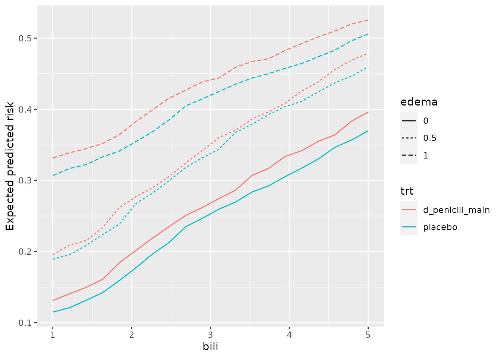

Partial dependence (PD)
Partial dependence (PD) shows the expected prediction from a model as a function of a single predictor or multiple predictors. The expectation is marginalized over the values of all other predictors, giving something like a multivariable adjusted estimate of the model’s prediction.
Begin by fitting an ORSF ensemble. Set a prediction horizon of 5
years when we fit the ensemble so that any aorsf function
that we pass this ensemble to will assume we want to compute predictions
at 5 years.
library(aorsf)
pred_horizon <- 365.25 * 5
set.seed(329730)
index_train <- sample(nrow(pbc_orsf), 150)
pbc_orsf_train <- pbc_orsf[index_train, ]
pbc_orsf_test <- pbc_orsf[-index_train, ]
fit <- orsf(data = pbc_orsf_train,
formula = Surv(time, status) ~ . - id,
oobag_pred_horizon = pred_horizon)
fit
#> ---------- Oblique random survival forest
#>
#> Linear combinations: Accelerated
#> N observations: 150
#> N events: 52
#> N trees: 500
#> N predictors total: 17
#> N predictors per node: 5
#> Average leaves per tree: 12
#> Min observations in leaf: 5
#> Min events in leaf: 1
#> OOB stat value: 0.83
#> OOB stat type: Harrell's C-statistic
#> Variable importance: anova
#>
#> -----------------------------------------Three ways to compute PD
You can compute PD three ways with aorsf:
-
using in-bag predictions for the training data
pd_inb <- orsf_pd_inb(fit, pred_spec = list(bili = 1:5)) pd_inb #> pred_horizon bili mean lwr medn upr #> 1: 1826.25 1 0.2154847 0.02028479 0.09620362 0.7999464 #> 2: 1826.25 2 0.2580146 0.03766695 0.15454947 0.8215570 #> 3: 1826.25 3 0.3001896 0.06432488 0.20728050 0.8429332 #> 4: 1826.25 4 0.3394211 0.08427149 0.25388024 0.8601380 #> 5: 1826.25 5 0.3703022 0.10680098 0.28301801 0.8696998 -
using out-of-bag predictions for the training data
pd_oob <- orsf_pd_oob(fit, pred_spec = list(bili = 1:5)) pd_oob #> pred_horizon bili mean lwr medn upr #> 1: 1826.25 1 0.2151526 0.01835000 0.0961149 0.7980629 #> 2: 1826.25 2 0.2572420 0.03685020 0.1444598 0.8181867 #> 3: 1826.25 3 0.2990080 0.05900059 0.2069944 0.8335823 #> 4: 1826.25 4 0.3388657 0.07887323 0.2434497 0.8486574 #> 5: 1826.25 5 0.3701697 0.10614495 0.2805791 0.8523756 -
using predictions for a new set of data
pd_test <- orsf_pd_new(fit, new_data = pbc_orsf_test, pred_spec = list(bili = 1:5)) pd_test #> pred_horizon bili mean lwr medn upr #> 1: 1826.25 1 0.2543006 0.02901386 0.1943949 0.8140307 #> 2: 1826.25 2 0.2956375 0.05072616 0.2473845 0.8314078 #> 3: 1826.25 3 0.3389084 0.07453896 0.3032327 0.8485016 #> 4: 1826.25 4 0.3800621 0.10565022 0.3516712 0.8588451 #> 5: 1826.25 5 0.4125041 0.12292465 0.3918400 0.8694518 in-bag PD indicates relationships that the model has learned during training. This is helpful if your goal is to interpret the model.
out-of-bag PD indicates relationships that the model has learned during training but using the out-of-bag data simulates application of the model to new data. if you want to test your model’s reliability or fairness in new data but you don’t have access to a large testing set.
new data PD shows how the model predicts outcomes for observations it has not seen. This is helpful if you want to test your model’s reliability or fairness.
Let’s re-fit our ORSF to all available data before proceeding to the next sections.
One variable, one horizon
Computing PD for a single variable is straightforward:
pd_sex <- orsf_pd_oob(fit, pred_spec = list(sex = c("m", "f")))
pd_sex
#> pred_horizon sex mean lwr medn upr
#> 1: 1826.25 m 0.3564912 0.03712878 0.2369997 0.9398747
#> 2: 1826.25 f 0.3035109 0.01053790 0.1568024 0.9545274The output shows that the expected predicted mortality risk for men is substantially higher than women at 5 years after baseline.
One variable, moving horizon
What if the effect of a predictor varies over time? PD can show this.
pd_sex_tv <- orsf_pd_oob(fit, pred_spec = list(sex = c("m", "f")),
pred_horizon = seq(365, 365*5))
ggplot(pd_sex_tv, aes(x = pred_horizon, y = mean, color = sex)) +
geom_line() +
labs(x = 'Time since baseline',
y = 'Expected risk')
From inspection, we can see that males have higher risk than females and the difference in that risk grows over time. This can also be seen by viewing the ratio of expected risk over time:
library(data.table)
ratio_tv <- pd_sex_tv[
, .(ratio = mean[sex == 'm'] / mean[sex == 'f']), by = pred_horizon
]
ggplot(ratio_tv, aes(x = pred_horizon, y = ratio)) +
geom_line(color = 'grey') +
geom_smooth(color = 'black', se = FALSE) +
labs(x = 'time since baseline',
y = 'ratio in expected risk for males versus females')
#> `geom_smooth()` using method = 'gam' and formula = 'y ~ s(x, bs = "cs")'
Multiple variables, marginally
If you want to compute PD marginally for multiple variables, just
list the variable values in pred_spec and specify
expand_grid = FALSE.
pd_two_vars <-
orsf_pd_oob(fit,
pred_spec = list(sex = c("m", "f"), bili = 1:5),
expand_grid = FALSE)
pd_two_vars
#> pred_horizon variable value level mean lwr medn upr
#> 1: 1826.25 sex NA m 0.3564912 0.03712878 0.2369997 0.9398747
#> 2: 1826.25 sex NA f 0.3035109 0.01053790 0.1568024 0.9545274
#> 3: 1826.25 bili 1 <NA> 0.2461638 0.01583046 0.1295294 0.8963509
#> 4: 1826.25 bili 2 <NA> 0.3023356 0.03962917 0.2026023 0.9165164
#> 5: 1826.25 bili 3 <NA> 0.3519626 0.06060907 0.2635266 0.9220564
#> 6: 1826.25 bili 4 <NA> 0.3947579 0.08420548 0.3188143 0.9267172
#> 7: 1826.25 bili 5 <NA> 0.4293114 0.10880143 0.3618061 0.9255556Now would it be tedious if you wanted to do this for all the variables? You bet. That’s why we made a function for that. As a bonus, the printed output is sorted from most to least important variables.
pd_smry <- orsf_summarize_uni(fit)
pd_smry
#>
#> -- bili (VI Rank: 1) -------------------------------------
#>
#> |---------------- risk ----------------|
#> Value Mean Median 25th % 75th %
#> 0.80 0.2384834 0.1161447 0.05083804 0.3819801
#> 1.4 0.2650961 0.1520876 0.07038703 0.4319252
#> 3.5 0.3757328 0.2962150 0.16422471 0.5693036
#>
#> -- copper (VI Rank: 2) -----------------------------------
#>
#> |---------------- risk ----------------|
#> Value Mean Median 25th % 75th %
#> 43 0.2674680 0.1379648 0.05160351 0.4454352
#> 74 0.2916843 0.1599240 0.06762896 0.4988722
#> 129 0.3468187 0.2274629 0.11003062 0.5575685
#>
#> -- sex (VI Rank: 3) --------------------------------------
#>
#> |---------------- risk ----------------|
#> Value Mean Median 25th % 75th %
#> m 0.3564912 0.2369997 0.10787696 0.5872914
#> f 0.3035109 0.1568024 0.05434944 0.5526196
#>
#> -- stage (VI Rank: 4) ------------------------------------
#>
#> |---------------- risk ----------------|
#> Value Mean Median 25th % 75th %
#> 1 0.5847147 0.52941 0.3996593 0.7568616
#> 2 0.5847147 0.52941 0.3996593 0.7568616
#> 3 0.5847147 0.52941 0.3996593 0.7568616
#> 4 0.5847147 0.52941 0.3996593 0.7568616
#>
#> -- age (VI Rank: 5) --------------------------------------
#>
#> |---------------- risk ----------------|
#> Value Mean Median 25th % 75th %
#> 42 0.2769998 0.1475089 0.04641807 0.4656813
#> 50 0.3105800 0.1962849 0.05238234 0.5260957
#> 57 0.3458171 0.2416166 0.08073215 0.5838783
#>
#> -- protime (VI Rank: 6) ----------------------------------
#>
#> |---------------- risk ----------------|
#> Value Mean Median 25th % 75th %
#> 10 0.2868796 0.1565407 0.05348739 0.5082739
#> 11 0.3049211 0.1630376 0.05660416 0.5398259
#> 11 0.3279135 0.1941268 0.07126535 0.5817064
#>
#> -- albumin (VI Rank: 7) ----------------------------------
#>
#> |---------------- risk ----------------|
#> Value Mean Median 25th % 75th %
#> 3.3 0.3268318 0.1898688 0.06087156 0.6078501
#> 3.5 0.3040046 0.1564467 0.05753060 0.5400452
#> 3.8 0.2861643 0.1576060 0.05303617 0.5026478
#>
#> -- ascites (VI Rank: 8) ----------------------------------
#>
#> |---------------- risk ----------------|
#> Value Mean Median 25th % 75th %
#> 0 0.3028570 0.1542828 0.05434944 0.5393245
#> 1 0.4525678 0.3667405 0.24229217 0.6413067
#>
#> -- chol (VI Rank: 9) -------------------------------------
#>
#> |---------------- risk ----------------|
#> Value Mean Median 25th % 75th %
#> 250 0.2931503 0.1529514 0.04780508 0.5046722
#> 310 0.3029789 0.1662991 0.05563008 0.5144736
#> 401 0.3256828 0.1983822 0.07294784 0.5492762
#>
#> -- ast (VI Rank: 10) -------------------------------------
#>
#> |---------------- risk ----------------|
#> Value Mean Median 25th % 75th %
#> 82 0.2903896 0.1490766 0.05113070 0.5159897
#> 117 0.3076024 0.1648002 0.05698760 0.5501132
#> 153 0.3307164 0.1800020 0.07086705 0.6059466
#>
#> -- edema (VI Rank: 11) -----------------------------------
#>
#> |---------------- risk ----------------|
#> Value Mean Median 25th % 75th %
#> 0 0.2968877 0.1534589 0.0539005 0.5366297
#> 0.5 0.3639845 0.2581248 0.1059203 0.6140513
#> 1 0.4571985 0.3727463 0.2549830 0.6499621
#>
#> -- spiders (VI Rank: 12) ---------------------------------
#>
#> |---------------- risk ----------------|
#> Value Mean Median 25th % 75th %
#> 0 0.2984039 0.1528105 0.05324006 0.5321606
#> 1 0.3438490 0.2238338 0.09693236 0.5660642
#>
#> -- hepato (VI Rank: 13) ----------------------------------
#>
#> |---------------- risk ----------------|
#> Value Mean Median 25th % 75th %
#> 0 0.2924451 0.1513041 0.05269621 0.5291405
#> 1 0.3274109 0.1826162 0.07423325 0.5488156
#>
#> -- trt (VI Rank: 14) -------------------------------------
#>
#> |---------------- risk ----------------|
#> Value Mean Median 25th % 75th %
#> d_penicill_main 0.3146055 0.1808374 0.06225388 0.5581896
#> placebo 0.3092247 0.1616993 0.05455801 0.5462009
#>
#> -- trig (VI Rank: 15) ------------------------------------
#>
#> |---------------- risk ----------------|
#> Value Mean Median 25th % 75th %
#> 85 0.3020625 0.1594529 0.04947666 0.5368518
#> 108 0.3094585 0.1642559 0.05138019 0.5381577
#> 151 0.3236035 0.1919256 0.06579255 0.5484254
#>
#> -- alk.phos (VI Rank: 16) --------------------------------
#>
#> |---------------- risk ----------------|
#> Value Mean Median 25th % 75th %
#> 922 0.3125063 0.1746096 0.05547749 0.5655240
#> 1278 0.3143534 0.1730928 0.06012625 0.5716067
#> 2068 0.3175794 0.1719252 0.05909212 0.5968980
#>
#> -- platelet (VI Rank: 17) --------------------------------
#>
#> |---------------- risk ----------------|
#> Value Mean Median 25th % 75th %
#> 200 0.3178789 0.1797536 0.05520746 0.5855790
#> 257 0.3120217 0.1700296 0.05532263 0.5736814
#> 318 0.3087421 0.1739535 0.05590358 0.5649877
#>
#> Predicted risk at time t = 1826.25 for top 17 predictorsIt’s easy enough to turn this ‘summary’ object into a
data.table for downstream plotting and tables.
head(as.data.table(pd_smry))
#> variable importance Value Mean Median 25th % 75th %
#> 1: bili 0.11319592 0.80 0.2384834 0.1161447 0.05083804 0.3819801
#> 2: bili 0.11319592 1.4 0.2650961 0.1520876 0.07038703 0.4319252
#> 3: bili 0.11319592 3.5 0.3757328 0.2962150 0.16422471 0.5693036
#> 4: copper 0.04949475 43 0.2674680 0.1379648 0.05160351 0.4454352
#> 5: copper 0.04949475 74 0.2916843 0.1599240 0.06762896 0.4988722
#> 6: copper 0.04949475 129 0.3468187 0.2274629 0.11003062 0.5575685
#> pred_horizon level
#> 1: 1826.25 <NA>
#> 2: 1826.25 <NA>
#> 3: 1826.25 <NA>
#> 4: 1826.25 <NA>
#> 5: 1826.25 <NA>
#> 6: 1826.25 <NA>Multiple variables, jointly
PD can show the expected value of a model’s predictions as a function
of a specific predictor, or as a function of multiple predictors. For
instance, we can estimate predicted risk as a joint function of
bili, edema, and trt:
pred_spec = list(bili = seq(1, 5, length.out = 20),
edema = levels(pbc_orsf_train$edema),
trt = levels(pbc_orsf$trt))
pd_bili_edema <- orsf_pd_oob(fit, pred_spec)
library(ggplot2)
ggplot(pd_bili_edema, aes(x = bili, y = medn, col = trt, linetype = edema)) +
geom_line() +
labs(y = 'Expected predicted risk')
From inspection,
the model’s predictions indicate slightly lower risk for the placebo group, and these do not seem to change much at different values of
bilioredema.There is a clear increase in predicted risk with higher levels of
edemaand with higher levels ofbili-
the slope of predicted risk as a function of
biliappears highest among patients withedemaof 0.5. Is the effect ofbilimodified byedemabeing 0.5? A quick sanity check withcoxphsuggests there is.library(survival) pbc_orsf$edema_05 <- ifelse(pbc_orsf$edema == '0.5', 'yes', 'no') fit_cph <- coxph(Surv(time,status) ~ edema_05 * bili, data = pbc_orsf) anova(fit_cph) #> Analysis of Deviance Table #> Cox model: response is Surv(time, status) #> Terms added sequentially (first to last) #> #> loglik Chisq Df Pr(>|Chi|) #> NULL -550.19 #> edema_05 -546.83 6.7248 1 0.009508 ** #> bili -513.59 66.4689 1 3.555e-16 *** #> edema_05:bili -510.54 6.1112 1 0.013433 * #> --- #> Signif. codes: 0 '***' 0.001 '**' 0.01 '*' 0.05 '.' 0.1 ' ' 1
Individual conditional expectations (ICE)
Unlike partial dependence, which shows the expected prediction as a function of one or multiple predictors, individual conditional expectations (ICE) show the prediction for an individual observation as a function of a predictor.
Just like PD, we can compute ICE using in-bag, out-of-bag, or testing data, and the same principles apply. We’ll use out-of-bag estimates here.
Visualizing ICE curves
Inspecting the ICE curves for each observation can help identify whether there is heterogeneity in a model’s predictions. I.e., does the effect of the variable follow the same pattern for all the data, or are there groups where the variable impacts risk differently?
I am going to turn off boundary checking in orsf_ice_oob
by setting boundary_checks = FALSE, and this will allow me
to generate ICE curves that go beyond the 90th percentile of
bili.
pred_spec <- list(bili = seq(1, 10, length.out = 25))
ice_oob <- orsf_ice_oob(fit, pred_spec, boundary_checks = FALSE)
ice_oob
#> id_variable id_row pred_horizon bili pred
#> 1: 1 1 1826.25 1 0.9194969
#> 2: 1 2 1826.25 1 0.1136944
#> 3: 1 3 1826.25 1 0.7413338
#> 4: 1 4 1826.25 1 0.3671091
#> 5: 1 5 1826.25 1 0.1439086
#> ---
#> 6896: 25 272 1826.25 10 0.3218517
#> 6897: 25 273 1826.25 10 0.4362345
#> 6898: 25 274 1826.25 10 0.4962449
#> 6899: 25 275 1826.25 10 0.3131265
#> 6900: 25 276 1826.25 10 0.5433389id_variableis an identifier for the current value of the variable(s) that are in the data. It is redundant if you only have one variable, but helpful if there are multiple variables.id_rowis an identifier for the observation in the original data. It is used to group an observation’s predictions together in plots.
For plots, it is helpful to scale the ICE data. I subtract the
initial value of predicted risk (i.e., when bili = 1) from
each observation’s conditional expectation values. So,
Every curve start at 0
-
The plot shows change in predicted risk as a function of
bili.ice_oob[, pred_subtract := rep(pred[id_variable==1], times=25)] ice_oob[, pred := pred - pred_subtract]
Now we can visualize the curves.
library(ggplot2)
ggplot(ice_oob, aes(x = bili,
y = pred,
group = id_row)) +
geom_line(alpha = 0.15) +
labs(y = 'Change in predicted risk') +
geom_smooth(se = FALSE, aes(group = 1))
#> `geom_smooth()` using method = 'gam' and formula = 'y ~ s(x, bs = "cs")'
From inspection of the figure,
Most of the individual slopes cluster around the overall trend - Good!
A small number of individual slopes appear to be flat. It may be helpful to investigate this further.
Limitations of PD
Partial dependence has a number of known limitations and assumptions that users should be aware of (see Hooker, 2021). In particular, partial dependence is less intuitive when >2 predictors are examined jointly, and it is assumed that the feature(s) for which the partial dependence is computed are not correlated with other features (this is likely not true in many cases). Accumulated local effect plots can be used (see here) in the case where feature independence is not a valid assumption.
References
- Giles Hooker, Lucas Mentch, Siyu Zhou. Unrestricted Permutation forces Extrapolation: Variable Importance Requires at least One More Model, or There Is No Free Variable Importance. arXiv e-prints 2021 Oct; arXiv-1905. URL: https://doi.org/10.48550/arXiv.1905.03151